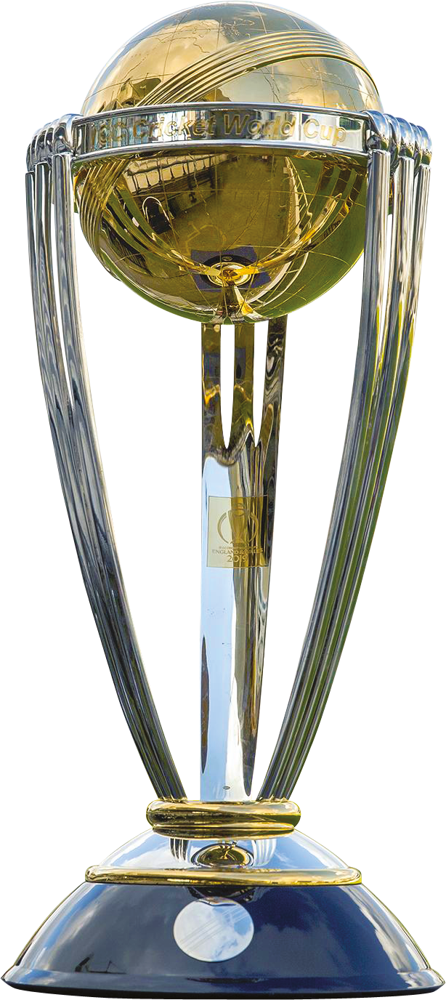

THE JOURNEY
Less than thirty years before that enchanting Saturday night when Ravi Shastri’s voice rang through television sets all over India, when even the spunky and exuberant Indian youth showed more interest in an old-school CRT television at a local chai ki dukaan than the dance-floor at a pub, a pump-operator in Ranchi awaited the birth of his third child.
"Dhoniiiii finishes off in style. A magnificent strike into the crowd. India lift the World Cup after 28 years. The party's started in the dressing room. And it’s an Indian captain, who’s been absolutely magnificent, in the night of the final.’
Any cricket fan worth his salt just read this in Ravi Shastri's most dramatic voice, as Mahendra Singh Dhoni enchanted the Wankhede on the night of 2nd April 2011.The Foundations
Hailing from Jharkhand, Mahendra Singh Dhoni’s rise through the ranks into international cricket is a tale of rebellion, extraordinary merit, perseverance, and, most of all, belief. After being scouted on the whims of his school P.E. teacher as a wicketkeeper, Dhoni created whispers in the cricketing circles of Ranchi - a teenage boy with no measurable upper-body strength clearing boundaries against some of the best fast bowlers of the district. However, the system failed him as he found it difficult to make the cut against candidates of the more affluent A-tier states. Consequently, in a desperate move, he joined the Railways Ranji team and started to work as a ticket collector at the Kharagpur railway station to make ends meet.Nevertheless, in a few months, the stars started to align themselves for the precocious wunderkind from Ranchi. Inspired by the KSCA, the BCCI started a country-wide Training Research Development Wing to scout talent from the more financially backward states. Dhoni immediately caught the eyes of the scouts and was sent on an A tour to Kenya, where his talent burst forth for the world to see as he showcased his batting pyrotechnics against world-class bowlers in alien conditions. He immediately shot to national reckoning and was selected for the tour of Bangladesh in November 2004.By then a broad 22-year-old with long locks, Dhoni’s India career got off to an inauspicious start, as he scored a duck in his first ODI and a string of low scores followed. However, the selectors and the then-captain Sourav Ganguly decided to persist with him and gave him an extended run. Dhoni repaid their faith with an exhibition of his charisma and audacious stroke-play in his fifth ODI against Pakistan, who certainly didn’t see the butchery coming, as he butchered his way to 148 at Vishakhapatnam. Later in 2005, he went one step further bludgeoning his way to a brutal 183* in Jaipur to make a mockery of a 300-run chase against a Sri Lankan attack that looked aghast at his bizarre-but-effective stroke-play and the unparalleled physical power that he imparted on the ball. ...
Hailing from Jharkhand, Mahendra Singh Dhoni’s rise through the ranks into international cricket is a tale of rebellion, extraordinary merit, perseverance, and, most of all, belief. After being scouted on the whims of his school P.E. teacher as a wicketkeeper, Dhoni created whispers in the cricketing circles of Ranchi - a teenage boy with no measurable upper-body strength clearing boundaries against some of the best fast bowlers of the district. However, the system failed him as he found it difficult to make the cut against candidates of the more affluent A-tier states. Consequently, in a desperate move, he joined the Railways Ranji team and started to work as a ticket collector at the Kharagpur railway station to make ends meet.Nevertheless, in a few months, the stars started to align themselves for the precocious wunderkind from Ranchi. Inspired by the KSCA, the BCCI started a country-wide Training Research Development Wing to scout talent from the more financially backward states. Dhoni immediately caught the eyes of the scouts and was sent on an A tour to Kenya, where his talent burst forth for the world to see as he showcased his batting pyrotechnics against world-class bowlers in alien conditions. He immediately shot to national reckoning and was selected for the tour of Bangladesh in November 2004.
By then a broad 22-year-old with long locks, Dhoni’s India career got off to an inauspicious start, as he scored a duck in his first ODI and a string of low scores followed. However, the selectors and the then-captain Sourav Ganguly decided to persist with him and gave him an extended run. Dhoni repaid their faith with an exhibition of his charisma and audacious stroke-play in his fifth ODI against Pakistan, who certainly didn’t see the butchery coming, as he butchered his way to 148 at Vishakhapatnam. Later in 2005, he went one step further bludgeoning his way to a brutal 183* in Jaipur to make a mockery of a 300-run chase against a Sri Lankan attack that looked aghast at his bizarre-but-effective stroke-play and the unparalleled physical power that he imparted on the ball.
As teams all over the world tried to work a way around his fireworks, Dhoni established himself as a reliable batsman in Tests too, with a technique that worked against pace, seam, swing and spin. In his 5th Test, he coincidentally scored another 148 against Pakistan in an uncharacteristically stoic effort to save the match, thereby portraying his versatility as a batsman. After a string of wicketkeeper-batsmen being tried in the side, Dhoni had finally become a mainstay in the side - a powerful pinch-hitter towards the end of the innings capable of more than just cameos, and a more-than-reliable wicketkeeper in the side. In a state where leather ball cricket was a luxury, Dhoni grew up playing tennis ball cricket tournaments. With heavy Kashmir willow bats, light and hollow tennis balls, and long boundaries, he developed a bottomhand-dominated technique to impart maximum power on the light tennis ball which undergoes energy-damping upon impact. However, Dhoni stood out when he, along with a friend, developed an elevated body-weight shot with an exaggerated follow-through that cleared boundaries with ease. On that count, cricketing folklore will remember MS Dhoni as the man who had the audacity to play the 'helicopter shot' against the leather ball.
Captaincy
With a mature head on his shoulders and an astute and shrewd cricketing mind, Dhoni was recommended by senior players like Sachin Tendulkar and Rahul Dravid for captaincy after Rahul Dravid stepped down as skipper. On his first assignment in the inaugural World T20 in 2007, Dhoni and his young troops romped to the title in a shock victory for the inexperienced Indian side, bringing about the T20 revolution in India. Dhoni's calm and composed leadership was widely lauded in the cricketing fraternity after India brought the trophy home, earning him the label of ‘Captain Cool’. He was soon handed the ODI leadership as a natural move after his World T20 triumph, and after the retirement of Anil Kumble in late 2008, the Test leadership was thrust upon him too. Dhoni had a golden run as captain, with an unbeaten run in Test series since his captaincy debut, leading them to their first stint as the top-ranked Test team in the world. His winning streak included the home series against Australia in 2008, a 1-0 triumph in New Zealand in 2009, and a 2-0 victory against Sri Lanka at home, culminating in a comprehensive win at the Brabourne stadium, Mumbai, where he received the coveted Test Championship mace. India continued to dominate in home Tests after this and drew a series in South Africa, coming very close to their maiden series win in South Africa in the decider in Cape Town, where some stoic resistance by the hosts narrowly saved them from the a defeat at the hands of a rampaging Indian side in top form. Dhoni continued to garner praise for his success across formats; especially for his clinical success in limited-overs cricket, reaching the pinnacle of his captaincy career during India's path to glory in the 2011 World Cup. Dhoni’s India knocked out Australia, the holders of the World Cup since 1999, in the quarter-final in Ahmedabad. Having gone through a patch of lackluster form throughout the tournament, Dhoni peaked at the right time, exhibiting his usual sangfroid on the way to 91* in the World Cup final against Sri Lanka, and lofted an iconic six over long-on, triggering night-long celebrations all over Mumbai and the rest of India.Transition Period - A rebuilding phase
After the World Cup, the Indian team saw a difficult transition period. Dhoni's shrewd captaincy came under severe scrutiny during the 8 successive losses in England and Australia. In the aftermath of the overseas failures, which included England toppling them over as the number 1 Test side in the world, a fatigued Indian side faced a 1-2 drubbing against England at home as India's Test team hit rockbottom. The team's abysmal performances in the longer format raised serious questions about Dhoni's leadership and a whisper of his sacking; a somewhat misplaced and impulsive proposition, given the poor overall performance of the entire team, their inept technique against spin (which is their forte), an overflowing timetable, and a plethora of viable explanations. However, the transition phase in Indian cricket saw the famed batting line-up failing to meet their lofty standards, and a rather raw bowling fast-bowling line-up with negligible experience struggling, as Zaheer Khan suffering from a long-term injury. There was only so much Dhoni could do...
However, after taking some tough selection calls, Dhoni led the way in the Border-Gavaskar Trophy with a marathon 224 in Chennai, setting the platform for a clean-sweep of Australia at home, clinically blanking them to regain the trophy. India became the first team in more than 40 years to whitewash Australia in a Test series and Dhoni now had the most Test wins for an Indian captain under his belt. India's poor Test form had unfortunately seeped into the ODI fold as well. However, Dhoni developed an uncanny ability to play a symbolic game of poker during run-chases, and backing himself to finish it off in the last over without blinking. He repeated this feat multiple times: whacking a 112-meter six to clear the Adelaide boundary with 12 to win off 4 in the CB series, chasing down 15 in the last over in the Celkon Cup final to name a few, and a ridiculous 23 off the last over in a run-chase off Axar Patel to win a dead-rubber in IPL 2016; with the equation at 12 to win from 2, he dropped jaws by clouting two sixes to pull off a scarcely believable victory. He had started to build a reputation of being one of the most reliable batsmen limited-overs cricket, taking India to victory constantly from the jaws of defeat. For instance, his century batting at No.7 against Pakistan at Chennai, a stunning 113 walking into the crease when India were 29 for 5, was a knock that symbolized the leader MS Dhoni who led by example, as well as exhibited sharp tactical nous: a much sought-after combination in a captain.
The Redemption
After rebuilding the ODI side and phasing out the seniors, Dhoni had a fine run as captain in 2013, leading India to their second Champions Trophy triumph as they cruised to the title undefeated, providing a welcome distraction from the IPL spot-fixing controversy. This made him the first captain in history to win all three ICC global trophies, etching his name in the history books with an unprecedented record and an enviable trophy cabinet as a limited-overs captain. He led the side to the final of the 2014 World T20 in Bangladesh, in which India lost to Sri Lanka in the final, and the semi-final of the World T20 in 2016 in India. Dhoni also is the captain of Chennai franchise, one of the most successful teams in the history of Indian Premier League, which won back-to-back titles in the years 2010 and 2011 and also the Champions League T20 in the years 2010 and 2014. Dhoni's Test captaincy came under severe criticism, especially after India's continuous losses overseas. Despite a Lord’s victory on a green-top in 2014, India went on to lose the three subsequent Tests in England in 2014, where Dhoni made some lone contributions, including a dogged 82 in a total of 148 and a few other fifties. He countered the seam movement and swing by playing late and walking down the pitch, showing greater application than the rest of his line-up with more orthodox techniques. Despite not having the often-talked-about hundred in overseas conditions, Dhoni has made several valuable contributions in the lower-order which have immeasurable value in the context of the game.The Beginning of the end
In the away Border-Gavaskar trophy in 2014, moments after helping India draw the Boxing Day Test at Melbourne, Dhoni announced that he was stepping down from Test captaincy and retiring from Test cricket, citing excessive workload as the reason for quitting the longest format. After honing a potent bowling attack and a gritty batting line-up for his heir, and taking several body blows - literal and metaphorical - Dhoni ensured that he copped the criticism to nurture a potent team and left his successor a young, zealous team with the tenacity, fitness, and most importantly, the positive attitude to perform in all conditions. Dhoni successfully led India to the 2015 World Cup semi-final, where the defending champions conceded cricket’s most desirable trophy to Australia. Here too, Dhoni was the lone-warrior, as he gritted his way through to 65, as his team fell short by 95 runs. On 4th January, 2017 Dhoni stepped down as the captain of the Indian ODI and T20I team, bringing about the end of an era in Indian cricket. Having led the team with zeal and panache across all formats of the game for more than nine years, Dhoni decided to play with the freedom of a pure batsman in his final lap of international cricket without the enormous burden of captaincy. In 2018, with the top order of the Indian team in turbo-mode, MS Dhoni had fewer opportunities to bat and went through an alarming dip in form - the likes of which hadn't been seen since the early days of his international career. With a revised technique and a far more top-handed batting style, Dhoni reinforced his game to suit his waning reactions and wrist strength and continued to be a part of the Indian middle order, guiding younger bowlers, almost handholding the spinners in limited-overs cricket and creating dismissals out of thin air with his lightning-quick stumpings, and almost reinventing the art of wicketkeeping to spinners by eliminating the followthrough at the point of connection. While his chicanery behind the stumps, and the tactical nous to assist the newer leaders may have been priceless for the team, the lack of runs and the declining strike-rate were starting to stand out, leading to his exclusion from T20Is in late 2018. Despite a fantastic IPL 2018, Dhoni has struggled to make his bat do the talking in international cricket of late, as the helicopter stands rusting on the spot it was last seen. After the semifinal heartbreak of the 2019 World Cup, Dhoni did not play an international game for India. On August 15, 2020, just like catches batsmen unaware with his glovework, MS Dhoni surprised the cricketing world by announcing his international retirement through an Instagram post that read, \"Thanks a lot for ur love and support throughout.from 1929 hrs consider me as Retired.\" The journey started with a run-out and ended with a run-out.IPL through the years
MS Dhoni and Chennai Super Kings is a great yellove story. Ever since the Indian Premier League idea spread vigorously among the cricketing fraternity, people wondered which team would pouch the then Indian captain. The Super Kings, run by an organisation that knew the nuances of running sports, knew they wanted a strong leader to lay a strong base and they made a grand opening by bagging Dhoni for a whopping 6 Crore, the highest bid back then. The IPL would be born on April 18, 2008 and on June 1, Dhoni was there leading CSK in the final, albeit in a losing cause in a final-ball finish. The result may not have gone his way, but he made a mark with his captaincy and by finishing as the side's second highest run-getter. CSK were stopped one step before the final in 2009, but a year later, Dhoni made a quirky move against Kieron Pollard in the final against Mumbai Indians by placing a straightish mid-off despite having a long-off to get his hands on the coveted trophy after two failed attempts. With three consistent years, Dhoni ensured the team made a big mark and they were considered the invincibles of the IPL. CSK justified the tag by winning the title in 2011 and came runners up in the following two editions.Dhoni was the third highest run-getter in 2013, a season where he fought a lone battle against Mumbai in the final. His team team suffered a tough loss in Qualifier 2 against a rampant Kings XI Punjab in 2014, another year where Dhoni scored in excess of 350 runs. 2015 was a black mark in CSK's history as the team was hit by the spot-fixing saga, but Dhoni led the side to the final among the ruckus, before the franchise was slapped with a two-year ban. The ban meant all the CSK players were to spread and Dhoni moved to the newly formed Rising Pune Supergiant in 2016. He spent a quite year, but was back doing what he does best, leading his side to the final, but yet again, finished runners-up in a heart-breaking loss to the Mumbai Indians in the final. 2018 was a grand re-entry for Dhoni and CSK. The franchise was given an unimaginably rousing welcome by the fans, who even took a train all the way from Chennai to Pune to support the team as the matches had to be moved out of Chennai. Dhoni was back to where he belonged. He looked fresher, fitter and hungrier. With his brilliant power-hitting through the season, he silenced critics who ever questioning his hitting prowess and made a strong statement that he is still well and truly alive for the 2019 World Cup. After a heart-breaking 1-run loss in the 2019 IPL final to Mumbai, Dhoni led CSK to their 4th title in 2021. Dhoni stepped down from CSK captaincy but he got it back from Ravindra Jadeja after a disastrous 2022 season which saw them not qualify for the playoffs. Dhoni will be back for the 2023 season and will captain the side.
THE STATS

98Matches |
85Innings |
1617Runs |
56High Score |
126.13SR |
37.6Avg |

350Matches |
297Innings |
10773Runs |
183High Score |
87.56SR |
50.58Avg |

90Matches |
144Innings |
4876Runs |
224High Score |
59.12SR |
38.09Avg |

250Matches |
218Innings |
5082Runs |
84High Score |
135.92SR |
38.79Avg |
THE GLORY
 T20 WORLDCUP 2007
T20 WORLDCUP 2007
IPL 2010
 CLT20
2010
CLT20
2010 ASIA
CUP 2010
ASIA
CUP 2010WORLD CUP 2011
IPL 2011
 CHAMPIONS TROPHY 2013CLT20
2014ASIA
CUP 2016
CHAMPIONS TROPHY 2013CLT20
2014ASIA
CUP 2016IPL
2018
IPL
2021
IPL
2023